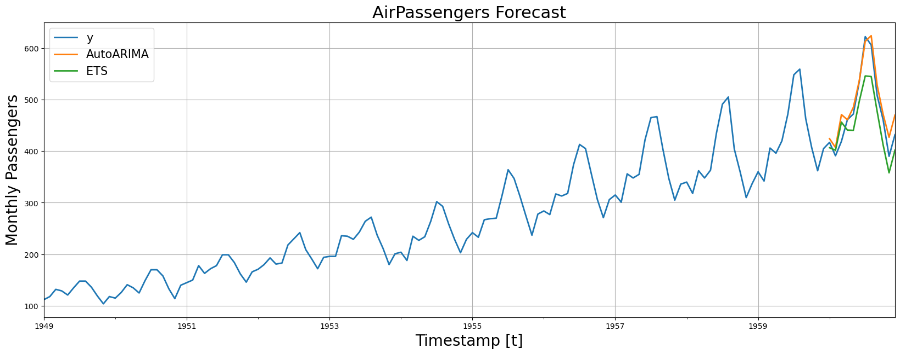

!pip install statsforecastForecast with ARIMA and ETS
Automatic Forecasting with
AutoARIMA and AutoETS
Tip
You can use Colab to run this Notebook interactively 
Introduction
Automatic forecasting tools search for the best parameters and select the best possible model for a series of time series. These tools are useful for large collections of univariate time series.
The R’s programming language offers two great packages by Rob Hyndmann for Automatic forecasting:
Both models are highly accurate and reliable. Time series practitioners use them as reference or baseline models in a variety of forecasting tasks.
Before StatsForecast, similar alternatives -in terms of accuracy and computational efficiency- did not exist for the Python ecosystem. Seeking to bridge that Gap, we developed a new and highly efficient pure-Python implementation of these classic algorithms. In this notebook, we will show you how to use them.
Install the StatsForecast Library
Load the Data
For this notebook, we will use the classical AirPassenger Data set. For simplicity’s sake, you can import it from StatsForecast.
from statsforecast.utils import AirPassengersDF
Y_df = AirPassengersDF
Y_df.head()/Users/max.mergenthaler/Nixtla/statsforecast/statsforecast/core.py:21: TqdmWarning: IProgress not found. Please update jupyter and ipywidgets. See https://ipywidgets.readthedocs.io/en/stable/user_install.html
from tqdm.autonotebook import tqdm| unique_id | ds | y | |
|---|---|---|---|
| 0 | 1.0 | 1949-01-31 | 112.0 |
| 1 | 1.0 | 1949-02-28 | 118.0 |
| 2 | 1.0 | 1949-03-31 | 132.0 |
| 3 | 1.0 | 1949-04-30 | 129.0 |
| 4 | 1.0 | 1949-05-31 | 121.0 |
Split the dataset in train and test to evaluate your model at a later stage.
Y_train_df = Y_df[Y_df.ds<='1959-12-31'] # 132 monthly observations for train
Y_test_df = Y_df[Y_df.ds>'1959-12-31'] # 12 monthly observations for test
Tip
Cross Validation or Backtesting is the recommended method to evaluate performance of time series models. Cross-validation consists in evaluating the performance of a certain model across different past windows. You can use the StatsForecast.cross_validation method from the StatsForecast class. See also: Cross Validation for Time Series.
import numpy as np
import pandas as pd
from IPython.display import display, Markdown
import matplotlib.pyplot as plt
from statsforecast import StatsForecast
from statsforecast.models import AutoARIMA, ETS
from statsforecast.utils import AirPassengersDFForecast with different models
StatsForecast includes a wide range of models. For this example we will use two classical univarate models:
ETS: The exponential smoothing (ETS) algorithm is especially suited for data with seasonality and trend. ETS computes a weighted average over all observations in the input time series dataset as its prediction. In contrast to moving average methods with constant weights, ETS weights exponentially decrease over time, capturing long term dependencies while prioritizing new observations.
AutoARIMA: The autoregressive integrated moving average (ARIMA), combines differencing steps, lag regression and moving averages into a single method capable of modeling non-stationary time series. This method complements on ETS and it is based on the description of data’s autocorrelations.
It is always a good idea to include benchmark models to have an estimate of how much accuracy we are gaining. For this exercise, we will use a Naive model.
from statsforecast import StatsForecast #Imports the core StatsForecast class
from statsforecast.models import AutoARIMA, ETS, Naive #Imports the models you will useDefine the parameters that you want to use in your models.
season_length = 12 # Monthly data
horizon = len(Y_test_df) # Predict the lenght of the test df
# Include the models you imported
models = [
AutoARIMA(season_length=season_length),
ETS(season_length=season_length),
Naive()
]
# Instansiate the StatsForecast class as sf
sf = StatsForecast(
df=Y_train_df,
models=models,
freq='M',
n_jobs=-1
)
# Forecast for the defined horizon
Y_hat_df = sf.forecast(horizon)
Y_hat_df.head()| ds | AutoARIMA | ETS | Naive | |
|---|---|---|---|---|
| unique_id | ||||
| 1.0 | 1960-01-31 | 424.160156 | 406.651276 | 405.0 |
| 1.0 | 1960-02-29 | 407.081696 | 401.732910 | 405.0 |
| 1.0 | 1960-03-31 | 470.860535 | 456.289642 | 405.0 |
| 1.0 | 1960-04-30 | 460.913605 | 440.870514 | 405.0 |
| 1.0 | 1960-05-31 | 484.900879 | 440.333923 | 405.0 |
For efficiency’s sake, the forecast method converts the unique_id column to an index. You can revert to the default index of the data frame using the pd.reset_index method from Pandas.
Y_hat_df.reset_index()| unique_id | ds | AutoARIMA | ETS | Naive | |
|---|---|---|---|---|---|
| 0 | 1.0 | 1960-01-31 | 424.160156 | 406.651276 | 405.0 |
| 1 | 1.0 | 1960-02-29 | 407.081696 | 401.732910 | 405.0 |
| 2 | 1.0 | 1960-03-31 | 470.860535 | 456.289642 | 405.0 |
| 3 | 1.0 | 1960-04-30 | 460.913605 | 440.870514 | 405.0 |
| 4 | 1.0 | 1960-05-31 | 484.900879 | 440.333923 | 405.0 |
| 5 | 1.0 | 1960-06-30 | 536.903931 | 496.866058 | 405.0 |
| 6 | 1.0 | 1960-07-31 | 612.903198 | 545.839111 | 405.0 |
| 7 | 1.0 | 1960-08-31 | 623.903381 | 544.672485 | 405.0 |
| 8 | 1.0 | 1960-09-30 | 527.903320 | 477.034485 | 405.0 |
| 9 | 1.0 | 1960-10-31 | 471.903320 | 412.423096 | 405.0 |
| 10 | 1.0 | 1960-11-30 | 426.903320 | 357.949158 | 405.0 |
| 11 | 1.0 | 1960-12-31 | 469.903320 | 402.032745 | 405.0 |
Plot the predictions
Plot the forecasts (also known as Y hat) against the real values of test using Matplot lib.
import matplotlib.pyplot as plt# Merge the forecasts with the true values
Y_hat_df = Y_test_df.merge(Y_hat_df, how='left', on=['unique_id', 'ds'])
fig, ax = plt.subplots(1, 1, figsize = (20, 7))
plot_df = pd.concat([Y_train_df, Y_hat_df]).set_index('ds')
plot_df[['y', 'AutoARIMA', 'ETS']].plot(ax=ax, linewidth=2)
ax.set_title('AirPassengers Forecast', fontsize=22)
ax.set_ylabel('Monthly Passengers', fontsize=20)
ax.set_xlabel('Timestamp [t]', fontsize=20)
ax.legend(prop={'size': 15})
ax.grid()
Evaluate the predictions
Finally, we evaluate the predictions accuracy using the Mean Absolute Error:
\[ \qquad MAE = \frac{1}{Horizon} \sum_{\tau} |y_{\tau} - \hat{y}_{\tau}|\qquad \]
def mae(y_hat, y_true):
return np.mean(np.abs(y_hat-y_true))
y_true = Y_test_df['y'].values
ets_preds = Y_hat_df['ETS'].values
arima_preds = Y_hat_df['AutoARIMA'].values
naive_preds = Y_hat_df['Naive'].values
print('ETS MAE: %0.3f' % mae(ets_preds, y_true))
print('ARIMA MAE: %0.3f' % mae(arima_preds, y_true))
print('Naive MAE: %0.3f' % mae(naive_preds, y_true))ETS MAE: 35.612
ARIMA MAE: 18.551
Naive MAE: 76.000The best-performing model for this dataset is the ARIMA model. Notice that in both cases, our models are fare better estimates of the future than our baseline model.
Tip
For a complete list of available automatic forecasting models -as well as benchmark models- visit the model’s section of the documentation.
References
Give us a ⭐ on Github